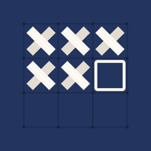

StitchKeeperHelp
Questions
Which charts can I open?
PDF charts made with chart software (the symbols are text in the PDF): tap + → PDF or backup file, or use “Open in StitchKeeper” from Mail or Files. Multi-page charts are joined automatically. Scanned or image-only PDFs cannot be read from the PDF yet — print the chart and use Photo of a paper chart instead.
How do I import a paper chart?
Tap + → Photo of a paper chart (or Scan). Drag the four corners onto the outer corners of the grid, check that the blue lines sit on the printed lines, and compare the symbols with your chart. If one printed symbol shows up twice, select it and use Merge with another symbol.
How do I mark stitches?
Pick a color and tap the stitches you have done. Touch and hold, then drag, to mark a row, column or diagonal. Touch and hold without moving for the 10×10 square, parking a thread, or marking a stitch to unpick. With Apple Pencil, draw over the stitches; double-tap the Pencil to switch to clearing.
How do I keep my progress safe or move it to another device?
In a chart, open More → Export Backup (Pro) and save the file to Files or send it to yourself. Open the file on the other device to restore the chart with all marked stitches.
I bought Pro. How do I restore it?
In the library, tap Settings → Restore Purchases, signed in with the same Apple ID.
How do I delete or rename a project?
In the library, touch and hold the project card.
Sorular
Hangi desenleri açabilirim?
Desen programlarıyla hazırlanmış PDF desenler (semboller PDF'te metin olarak bulunur): + → PDF veya yedek dosyası, ya da Mail veya Dosyalar'dan “StitchKeeper'da aç”. Çok sayfalı desenler otomatik birleştirilir. Taranmış ya da yalnızca görüntüden oluşan PDF'ler henüz PDF olarak okunamaz; deseni yazdırıp Kâğıt desenin fotoğrafı seçeneğini kullan.
Kâğıt deseni nasıl eklerim?
+ → Kâğıt desenin fotoğrafı (ya da Kâğıt deseni tara). Dört köşeyi ızgaranın dış köşelerine sürükle, mavi çizgilerin basılı çizgilere oturduğunu kontrol et ve sembolleri deseninle karşılaştır. Basılı tek bir sembol iki kez göründüyse onu seçip Başka bir sembolle birleştir düğmesine bas.
İlmekleri nasıl işaretlerim?
Bir renk seç ve işlediğin ilmeklere dokun. Satır, sütun ya da çapraz işaretlemek için basılı tut ve sürükle. Kıpırdatmadan basılı tutunca 10×10 kare, iplik park etme ve söküm işareti seçenekleri çıkar. Apple Pencil ile ilmeklerin üzerinden geç; silmeye geçmek için kaleme çift dokun.
İlerlememi nasıl güvene alırım ya da başka cihaza taşırım?
Desende Diğer → Yedeği Dışa Aktar (Pro) ile dosyayı Dosyalar'a kaydet ya da kendine gönder. Dosyayı diğer cihazda açınca desen tüm işaretleriyle geri gelir.
Pro satın aldım, nasıl geri yüklerim?
Kitaplıkta Ayarlar → Satın Alımları Geri Yükle; aynı Apple kimliğiyle oturum açık olmalı.
Projeyi nasıl silerim ya da adını değiştiririm?
Kitaplıkta proje kartına basılı tut.
Contact · İletişim
Questions, problems or ideas: write to us on GitHub (a free GitHub account is needed). Messages there are public, so please leave out personal details. If a chart does not open as it should, say which designer or program made it; please do not attach charts you bought.
Soru, sorun ya da öneri için GitHub'da bize yaz (ücretsiz bir GitHub hesabı gerekir). Oradaki mesajlar herkese açıktır; kişisel bilgilerini yazma. Bir desen düzgün açılmıyorsa hangi tasarımcının ya da programın hazırladığını belirt; satın aldığın desenleri ekleme.